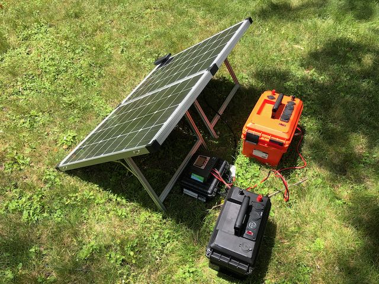

Power
This section describes how I power my stations.
Home
TODO: Provide details about Alinco power supplies.
Mobile
The Kenwood TM-710G is powered by a Bioenno \(LiFePO_4\) 30 Ah battery.
The Yaesu FTM-400XDR is powered by a Bioenno \(LiFePO_4\) 40 Ah battery.
The advantage of using these batteries for mobile operations is that I don’t have to worry about engine noise and I have a battery for other purposes.
Lately, I have been experimenting with recharging these batteries using foldable solar panels. As the experiments progress, I may consider keeping a solar panel in the car.
Portable
Batteries
I have two Bioenno \(LiFePO_4\) 12 Ah batteries that I recently purchased during a Chameleon Antenna sale.
My Tytera-based Go-box has an embedded Bioenno \(LiFePO_4\) 12 Ah battery.
I have a small, 6 Ah Bioenno battery that I often carry with the Elecraft KX-2.
Solar panels
I have a 120 W folding panel from Bionenno. I used it for Field Day from my backyard in 2020. The 30 Ah (orange) and 40 Ah (black) battery boxes can also be seen in the picture below.

I have two foldable 65 W solar panels that can be daisy-chained (in series). I used them in a recent portable operation in support of a mountain bike race.
{kind=link}
Charge controllers
Two charge controllers are available. One came with my Bioenno panels.

The other is the BuddiPole PowerMini2.

The PowerMini2 is a great little charge controller, but it is pricey and not often available because of high demand.